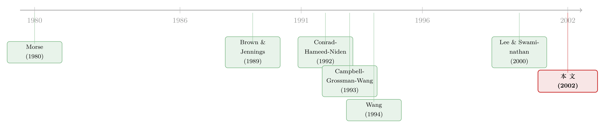

放量之后，是反转还是续涨？——成交量替你认出了『谁在交易』
本文读的是 Llorente, Michaely, Saar & Wang (2002, Review of Financial Studies)：同样是「放量」，有的股票第二天会反转，有的却会续涨——区别不在成交量本身，而在这只股票里「投机交易」相对「对冲交易」有多重。当私人信息（信息不对称）越严重，放量后的收益就越不容易反转、甚至会延续。一个简洁的均衡模型把这层直觉写成了可检验的回归，并用个股横截面验证了它。
1 一个自相矛盾的事实
成交量大概是所有人都盯着、却又最说不清楚的一个数字。盘口一旦放量，老练的交易者会立刻警觉：是有人在「出货」，还是有人「闻到了味道」？我们到底能从成交量里读出什么——这取决于人们为什么交易，以及不同动机的交易又如何写进价格。（关于「为什么看着成交量的人，往往是赚过钱、于是更爱交易的人」，可参见《赚过钱的人，更爱交易——一条藏在成交量里的「过度自信」》。）
但真正让人坐立不安的，是文献里一桩公开的矛盾。
一边，是研究总量（aggregate）的那一派：Campbell, Grossman & Wang（1993，下称 CGW）、LeBaron（1992）、Gallant, Rossi & Tauchen（1992）、Duffee（1992）……他们盯着市场指数，几乎异口同声地发现——放量日的收益倾向于反转：今天放量大涨，明天更可能跌回去。
另一边，是研究个股的那一派：Antoniewicz（1993）、Stickel & Verrecchia（1994）、Conrad, Hameed & Niden（1992）……他们把个股的收益和成交量「池化」（pool）在一起，却得到了相反的结论——个股在放量日的收益更能维持（sustainable），甚至会继续。
同一个变量，两套方向相反的结论。更尴尬的是，这两派谁也没有给出一个能把矛盾调和起来的解释，更没人去问：这种量价关系，会不会在不同股票之间本就不一样？
这篇论文的全部野心，就压在这一个问题上。
2 两种交易，两种「余味」
要调和矛盾，先得回到最朴素的一问：人为什么交易？作者只保留两个动机——
- 对冲交易（hedging trade）：为了分散、再平衡风险而买卖。（这类交易其实占了换手率的大头；关于「你买卖股票，多半只是在跟着大盘再平衡」，可参见《翻看换手率》。）
- 投机交易（speculative trade）：因为掌握了关于未来分红的私人信息而下注。
关键在于，这两种交易给收益留下的「余味」截然不同。
对冲交易 → 反转。 当一批投资者为了对冲而抛售，价格必须下跌，才能吸引别人来接盘。可这下跌不含任何关于未来分红的坏消息——既然预期支付没变，价格被压低就意味着下一期的预期收益反而升高了。于是今天的低收益，被明天的高收益「补」回来：收益负相关。
投机交易 → 续涨。 当掌握私人信息的人因为利空而卖出，价格下跌，反映的是真实的坏消息。可在一个非完全揭示（non-fully-revealing）的均衡里，价格只部分地吸收了这条私人信息；等它后续慢慢公开，价格会朝同一方向继续走。于是今天的低收益，预示着明天还是低收益：收益正相关。（这正是「续涨由知情交易推动」的微观版本，宏观对应可参见《动量到底是谁干的？》。）
还有第三种来源：关于未来支付的公共消息。它一来，价格瞬间充分调整，不改变任何人的持仓，因此既不产生成交量，也不产生序列相关——它只是收益里的一团白噪声。
现在，故事的逻辑链条已经成形：我们想分离出「由交易产生的收益」，并看它会不会预测未来。而成交量恰好是那把筛子——投机和对冲都伴随放量，公共消息却不会。于是，以「当前的量—价组合」为条件，我们就近似地挑出了由交易产生的那部分收益。接着，一个自然的问题是：当一只股票里投机交易越重，放量后的反转就该越弱、乃至翻转为续涨。这，就是要被写成方程、再被搬进回归的核心。
3 模型：把直觉写成方程
作者搭了一个尽量精简的均衡模型——它和 Wang（1994）一脉相承，但被刻意削薄，好让比较静态足够锋利。
设定。 离散时间，两种资产：无风险债券（利率 \(r\)，为方便设为 \(0\)）与一只股票。股票在 \(t+1\) 期支付的分红由两部分相加：
$$ D_{t+1} = F_t + G_t $$
其中 \(F_t\) 是人人可见的可预测部分，\(G_t\) 则是只有一类人看得见的部分。市场上有两类投资者，权重 \(\omega\) 与 \(1-\omega\)。每人还被赋予一份非交易资产（nontraded asset）\(Z^{(i)}_t\)，它在下一期每单位支付 \(N_{t+1}\)；正是这份资产，制造了对冲的需求。两类人都是 CARA（常绝对风险厌恶）效用，最大化下一期财富的期望效用：
$$ E\!\left[-e^{-\theta W_{t+1}}\,\middle|\,\Omega^{(i)}_t\right] $$
风险厌恶 \(\theta\) 不失一般性地设为 \(1\)。所有冲击 \(F,G,N,Z\) 都服从零均值正态，相互独立，唯独 \(D\) 与 \(N\) 相关（\(E[D N]=\sigma_{DN}\)）——这一点至关重要，它让「非交易资产的风险」必须靠买卖股票来对冲。
均衡（命题 1）。 解出来，投资者 \(i\) 的持仓是两块之和：
$$ X^{(i)}_t = \frac{E^{(i)}_t[D_{t+1}] - P_t}{\sigma^{(i)2}_R} \;-\; \frac{\sigma_{DN}}{\sigma^{(i)2}_R}\,Z^{(i)}_t $$
第一项是经典的「均值—方差」权衡：风险调整后的预期收益越高，持得越多；第二项与他手里的非交易资产成正比，是纯粹的对冲需求。均衡价格则写成
$$ P_t = F_t + \tilde P_t \equiv F_t + a\,G_t - \big(b^{(1)} Z^{(1)}_t + b^{(2)} Z^{(2)}_t\big) $$
价格里既有私人信息 \(G_t\)（系数 \(a\)），也有两类人的对冲压力 \(Z^{(i)}_t\)。一个漂亮的副产品是：在只有两类人的设定下，每个人通过自己的持仓就能反推出全市场的成交量——所以成交量对参与者不提供额外信息，但它对旁观者（比如我们这些研究者）却是一面镜子。
量价动态（命题 2）。 为讲清楚，令 \(Z^{(2)}_t=0\)，把所有交易都交给第 1 类人。收益与成交量分别为
$$ R_t = G_{t-1} + F_t + (\tilde P_t - \tilde P_{t-1}), \qquad V_t = (1-\omega)\,\big|\tilde P_t - \tilde P_{t-1}\big| $$
以「当前收益 + 当前成交量」为条件，对未来收益取期望，得到一个带双曲正切的精确式：
$$ E\!\left[R_{t+1}\,\middle|\,V^*_t, R_t\right] = C_1 R_t - C_2\, V^*_t \tanh\!\big(\lambda\, V^*_t R_t\big),\qquad C_1\le 0,\; C_2\ge 0,\; \lambda\ge 0 $$
其中 \(V^*_t \equiv V_t/E[V_t]\) 是被无条件均值标准化后的成交量。这个式子已经说出了第一层结论：给定当前收益，成交量越大，下一期的反转越强。
但真正好用的，是当量与价都不大时的近似——这也是后面所有实证的母方程：
这里 \(\delta_1 = -C_1 \ge 0\)，\(\delta_2 = C_2\lambda \ge 0\)。读法很直白：当前收益 \(R_t\) 前面挂着一个负号，意味着默认是反转；放量（\(V^*_t\) 越大）会把括号撑大，反转更猛。
比较静态（命题 3）——全文的命门。 用 \(\sigma^2_G\)（私人信息部分的方差）度量信息不对称，固定股票的总风险，看 \(\delta_1\)、\(\delta_2\) 怎么动：
- 当 \(\sigma^2_G = 0\)（没有信息不对称）：\(\delta_1 = 0\)，\(\delta_2 = \delta_{20} > 0\)。也就是说，没有成交量的收益不相关，有成交量的收益则倾向反转——这正是 CGW 的世界：只有对冲交易，放量必反转。
- 当 \(\sigma^2_G > 0\)（有信息不对称），且保持总风险不变：
$$ \delta_1 = \tfrac{1}{2}\,\omega\,\frac{\sigma^2_G}{\sigma^2_D}, \qquad \delta_2 = \delta_{20}\Big[\,1 - \omega\Big(\tfrac{1}{\sigma^2_D} + \tfrac{3}{2\sigma^2_{\tilde P}}\Big)\sigma^2_G\Big] + o(\sigma^2_G) $$
于是 \(\delta_1\) 随 \(\sigma^2_G\) 上升，\(\delta_2\) 随 \(\sigma^2_G\) 下降。后者才是关键：信息不对称越重，「放量 → 反转」这股力量就越弱，弱到一定程度，放量后的收益不再反转、甚至开始续涨。
至此，矛盾被彻底化解：CGW 的指数、大公司，信息不对称低，\(\delta_2\) 大，所以强反转；而 Antoniewicz、Stickel-Verrecchia 手里那些信息不对称高的个股，\(\delta_2\) 小，所以弱反转或续涨。同一个机制，两端的表现，被一个 \(\sigma^2_G\) 串了起来。
4 识别策略：把模型搬进回归
模型给出的母方程，落到数据上就是一条逐股的时间序列回归——对每只股票 \(i\)，用当前收益、以及「当前收益 × 当前成交量」的交互项，来解释下一期收益：
$$ R_{i,t+1} = c_{0,i} + c_{1,i} R_{i,t} + c_{2,i}\,V_{i,t} R_{i,t} + \varepsilon_{i,t+1} $$
其中 \(V_{i,t}\) 用换手率（turnover）的对数、去趋势后构造。这里的主角是 \(c_{2,i}\)：它正是 \(-\delta_2\) 的实证对应物，量度「放量如何改变收益的一阶自相关」。\(c_{2,i}<0\) 是反转，\(c_{2,i}>0\) 是续涨。
识别的逻辑分两步：先逐股估出 \(c_{2,i}\)，再看它在横截面上如何随信息不对称的代理变量变化。代理变量用了三个——市值、买卖价差（bid-ask spread）、以及分析师覆盖（analyst following）：市值越小、价差越宽、分析师越少，信息不对称越重。模型的预测因此变成一个干净的、可证伪的单调关系：信息不对称越重，\(c_{2,i}\) 越往正的方向走。
这套设计的高明之处在于，它没有止步于「成交量预测收益」这种笼统说法，而是把横截面的异质性本身当成检验对象——这正是它区别于 Hasbrouck（1988, 1991）那类「全样本线性设定」的地方。
5 数据
- 样本：在 NYSE 与 AMEX 上市的个股，日度频率的收益与成交量。
- 观测单位：股票—交易日。
- 成交量度量：去趋势的对数换手率（为剥离个股之间体量差异）。
- 信息不对称代理：市值、买卖价差、I/B/E/S 的分析师跟踪人数。
- 稳健性所需的变体：等噪声测量区间、不同的成交量定义、以及把量与价分解为系统/非系统两部分。
6 主要结果
结果几乎是把命题 3「印」在了数据上：
- 按市值/价差排序，\(c_2\) 单调变化、并跨过零线。 小公司、高价差的股票，在放量日之后倾向续涨（\(c_2>0\)）；大公司、低价差的股票，则几乎没有续涨、以反转为主（\(c_2\le 0\)）。
- 分析师覆盖给出独立的佐证。 被更多分析师跟踪的股票，放量后的续涨更弱——更多的「眼睛」对应更小的逆向选择，与信息不对称解释一致。
- 是「公司特有的私人信息」在起作用。 把成交量和收益都拆成系统与非系统两块后，「信息不对称 ↔ 成交量影响自相关」的关系依然存在——说明驱动横截面差异的是个股层面的私人信息，而非市场层面的共同波动。
- 一连串稳健性：替换计量设定、处理买卖价差跳动（bid-ask bounce）与「当日最后一笔成交时点」的差异、改用等噪声区间、更换成交量定义——结论都没有被推翻。
一句话记住这篇文章：成交量不是信号本身，而是一台「分拣机」——它把「由交易产生的收益」从「由公共消息产生的收益」里分出来；而这堆交易收益里到底是反转还是续涨，取决于投机交易相对对冲交易有多重。
7 文献脉络
把镜头拉远，这条线索是这样长出来的。最早，Morse（1980）就注意到证券市场里信息不对称与成交量的关系；进入九十年代，总量派（CGW 1993、LeBaron 1992 等）确立了「放量日反转」的事实，而个股池化派（Conrad-Hameed-Niden 1992、Antoniewicz 1993、Stickel-Verrecchia 1994）却得到「放量续涨」，两军对垒、僵持不下。
理论的一侧，Kyle（1985）、Glosten-Milgrom（1985）、Easley-O'Hara（1987）奠定了私人信息如何写进价格的微观结构基础；Brown & Jennings（1989）、Grundy & McNichols（1989）讨论了私人信息下收益序列相关的特征；而 Wang（1993, 1994）、He & Wang（1995）、Blume-Easley-O'Hara（1994）把风险分担与信息不对称同时塞进了量价的动态均衡。
本文（2002）站的位置，正是这两条线的交汇点：它借 Wang（1994）的骨架、却把它削薄到能产出清晰的横截面预测，从而用一个 \(\sigma^2_G\) 调和了总量与个股的矛盾。再往后，Lee & Swaminathan（2000）在六个月的长期视角上，发现「过去成交量 + 价格变化」优于单纯的价格动量——把同一种直觉延伸到了更长的地平线。

8 评论与延伸（Q&A + 研究方向）
(a) 几个可能的疑问
Q：这跟「动量」是一回事吗？
不是。动量讲的是月度乃至半年尺度的价格延续；这里是日度、且以成交量为条件的一阶自相关。机制也不同：本文的续涨来自非完全揭示均衡下私人信息的逐步定价，而非行为学意义上的反应不足。Lee & Swaminathan（2000）算是把二者在更长地平线上接上了头。
Q：凭什么说成交量能「认出」由交易产生的收益？
因为在模型里，公共消息直接改价、不伴随异常成交量；只有对冲与投机交易才放量。于是「以放量为条件」近似等于「挑出由交易产生的那部分收益」。这是 CGW 就用过的识别思想，本文把它推进到了横截面。
Q：用市值、价差、分析师覆盖当信息不对称的代理，可信吗？
单看任何一个都有内生性争议（市值还关联流动性、关注度等）。但三个代理方向一致，且在剥离系统性成分后关系仍在——这种「多代理 + 分解」的交叉验证，比押注单一代理稳健得多。
Q：「零成交量的收益也更反转」（\(\delta_1>0\)）这点为什么反直觉？
当存在信息不对称时，零成交量的收益里其实混入了部分被定价的私人信息成分，使其更容易回吐；模型把它单独标了出来。这恰恰说明：\(\delta_1\) 与 \(\delta_2\) 必须分开看，前者随信息不对称上升、后者随之下降，二者合起来才决定放量后的净效应。
Q：模型假设「成交量对投资者不含信息」，是不是太强？
是简化。它只在两类投资者时成立（人人能从自己持仓反推全市场量）。作者也坦承，一旦多于两类，成交量会携带价格之外的增量信息，价格行为会更复杂——这正是 Blume-Easley-O'Hara（1994）那条线关心的事。本文的取舍是：放弃这层信息，换来锋利的横截面预测。
Q：换成日内、或改变量定义，结论会不会就散了？
不会。作者专门用等噪声区间、替代成交量定义、以及处理买卖价差跳动和收盘时点差异来压力测试，核心结论都挺住了。
(b) 几个可能的研究问题与提案
1）把它搬到公司债市场：信用债的量价动态
【经济故事】公司债里同样有「再平衡/流动性交易」与「知情交易」两股力量，且债券的信息不对称（评级、覆盖、发行规模）差异极大——按本文逻辑，信息不透明的高收益债，放量后更可能续涨。【可行性】中：TRACE 提供日度成交，但成交量有报告上限截断（truncation），需要专门处理；可与《把『成交价』从『成交量』里解放出来》的流动性度量结合。
2）外资持有人是「投机者」还是「噪声」？用量价续涨来甄别
【经济故事】外资常被两种叙事拉扯：一说是知情的「聪明钱」，一说是追涨杀跌的扰动者。本文给了一把现成的尺子——若高外资持股的股票放量后更续涨，则更像知情投机。【可行性】中：需 FactSet/EPFR 或韩国、台湾这类有逐股外资持股的交易所数据；可与《外资真有「信息劣势」吗？》互为镜像检验。
3）流动性危机里，量价关系会不会整体翻转？
【经济故事】危机中对冲/抛售压力骤增，按本文机制，\(\delta_2\)（反转力）应当放大——但若知情者趁乱进场，又可能反向。把 2020 年的公司债流动性危机当作一次自然实验，看放量后到底是反转还是续涨。【可行性】高：可直接接续《差点死掉的那个市场：一场公司债流动性危机的微观解剖》的数据与设定。
4）共同做市商 / 共同持有人会不会污染「个股私人信息」的识别？
【经济故事】本文用系统/非系统分解来确证驱动力是个股私人信息；但若多只股票共用做市商或被同一批机构持有，「非系统」成分里可能仍混着共同冲击。把共同做市商（commonality in liquidity）显式控制后重估横截面，会更干净。【可行性】中：需要做市商层面的成交归属数据，可借鉴《你和我手里的股票，为什么会一起变难卖》的识别思路。
我的判断是：这篇文章的贡献不在于发现了某个新事实，而在于用一个削到刚刚好的均衡模型，把一桩看似互相打脸的实证矛盾，归并到了一条单一的、可度量的横截面维度（信息不对称）上——并且预测的符号、单调性都经得起逐股回归的检验。它把「成交量含不含信息」这个被问烂的问题，巧妙地转写成了「旁观者能从量价联动里读出什么经济结构」，这是方法论上很干净的一招。
要说对识别的担忧，主要有三点。其一，信息不对称的三个代理都和流动性、关注度深度纠缠，市值尤甚——\(c_2\) 的横截面变化里，有多少真是 \(\sigma^2_G\)、有多少是流动性，模型本身难以完全切开。其二，逐股估计 \(c_2\) 再做横截面，是典型的两步法，第一步的估计误差会渗进第二步，需要更现代的纠偏。其三，「两类投资者、成交量无信息」的设定虽换来了锋利，却也意味着它主动放弃了现实中成交量最有意思的那一半信息。
后续我最想看到的，是把这套框架搬到有真实订单流方向、且信息不对称可外生变动的市场里去——比如监管造成的透明度改革、或外资准入的自然实验——让 \(\sigma^2_G\) 不再只是个代理，而能被真正地「推一把」，再看 \(c_2\) 是否随之移动。那才是对这个机制最硬的检验。
参考文献
- Antoniewicz, R. L. (1993). Relative Volume and Subsequent Stock Price Movements. Working paper, Board of Governors of the Federal Reserve System.
- Blume, L., Easley, D., & O'Hara, M. (1994). Market Statistics and Technical Analysis: The Role of Volume. Journal of Finance 49(1), 153–181.
- Brown, D. P., & Jennings, R. H. (1989). On Technical Analysis. Review of Financial Studies 2(4), 527–551.
- Campbell, J. Y., Grossman, S. J., & Wang, J. (1993). Trading Volume and Serial Correlation in Stock Returns. Quarterly Journal of Economics 108(4), 905–939.
- Conrad, J., Hameed, A., & Niden, C. M. (1992). Volume and Autocovariances in Short-Horizon Individual Security Returns. Journal of Finance 49(4), 1305–1329.
- Easley, D., & O'Hara, M. (1987). Price, Trade Size, and Information in Securities Markets. Journal of Financial Economics 18(1), 69–90.
- Glosten, L., & Milgrom, P. (1985). Bid, Ask and Transaction Prices in a Market-Maker Market with Heterogeneously Informed Traders. Journal of Financial Economics 14(1), 71–100.
- Grundy, B., & McNichols, M. (1989). Trade and Revelation of Information Through Prices and Direct Disclosure. Review of Financial Studies 2(4), 495–526.
- Hasbrouck, J. (1988). Trades, Quotes, Inventories, and Information. Journal of Financial Economics 22(2), 229–252.
- Hasbrouck, J. (1991). Measuring the Information Content of Stock Trades. Journal of Finance 46(1), 179–207.
- He, H., & Wang, J. (1995). Differential Information and Dynamic Behavior of Trading Volume. Review of Financial Studies 8(4), 919–972.
- Kyle, A. S. (1985). Continuous Auctions and Insider Trading. Econometrica 53(6), 1315–1335.
- Lee, C. M. C., & Swaminathan, B. (2000). Price Momentum and Trading Volume. Journal of Finance (forthcoming).
- Llorente, G., Michaely, R., Saar, G., & Wang, J. (2002). Dynamic Volume-Return Relation of Individual Stocks. Review of Financial Studies 15(4), 1005–1047.
- Morse, D. (1980). Asymmetric Information in Securities Markets and Trading Volume. Journal of Financial and Quantitative Analysis 15(5), 1129–1148.
- Stickel, S. E., & Verrecchia, R. E. (1994). Evidence that Volume Sustains Price Changes. Financial Analysts Journal (November–December), 57–67.
- Wang, J. (1994). A Model of Competitive Stock Trading Volume. Journal of Political Economy 102(1), 127–168.